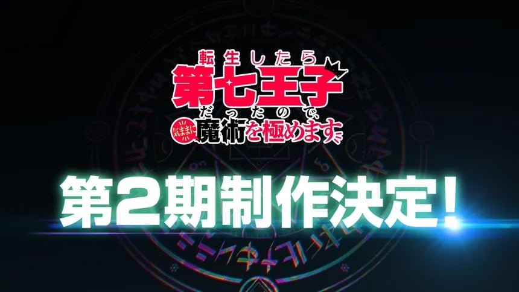

Trending Anime News

I Was Reincarnated as the 7th Prince so I Can Take My Time Perfecting My Magical Ability Season 2 Release Date Confirmed
The second season of "I Was Reincarnated as the 7th Prince so I Can Take My Time Perfecting My Magical Ability" is set to premiere on July 1, 2025. This announcement was made shortly after the conclusion of the first season's final episode. I Was Reincarnated as the 7th Prince so I Can Take My Time Perfecting My Magical Ability" is back, for its exciting second season! After being reborn in a magical world, our hero, the 7th prince, continues his quest to master his magical skills. With new challenges and powerful enemies on the horizon, he must push beyond his limits while uncovering secrets of this mystical realm. Friends become closer, and adventures get even more thrilling as he aims to protect his kingdom. Don't miss out on the magic and mystery—season 2 starts on July 01, 2025. Sign up for a reminder and join the adventure on TV Tokyo!

I Was Reincarnated as the 7th Prince so I Can Take My Time Perfecting My Magical Ability Season 2 Release Date Confirmed
I Was Reincarnated as the 7th Prince so I Can Take My Time Perfecting My Magical Ability; the anime has been confirmed for a second season. The show that became popular because of its distinct theme of magic and reincarnation and with a really, really long name will carry on the story of Lloyd, a prince fascinated with the idea of magic to the extreme.The anime series offers an exciting setting, a stimulating action line, and outstanding characters’ relations, which made the first season captivating enough for viewers to wait for the continuation. With the confirmation of season 2, fans are in for some action, more opportunities to learn more about magical arts, and further advancement of the plot in the 7th Prince’s storyline.